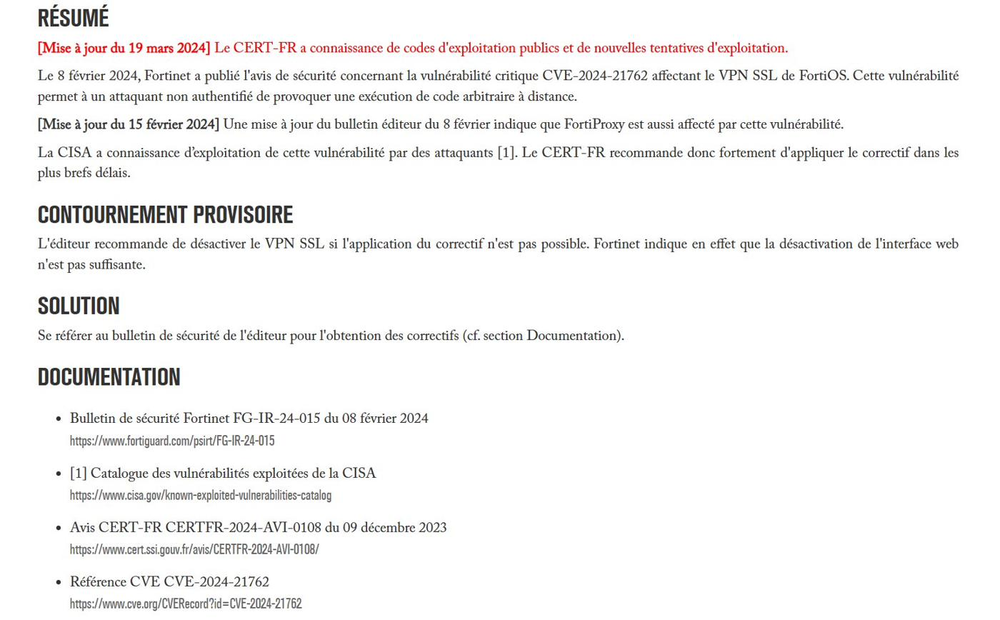

Contexte
Les chantiers de Vinci Construction sont équipés de pare-feux et points d'accès Fortinet (FortiGate, FortiWifi). Ces équipements constituent le point d'entrée du réseau de chaque site distant et sont, par nature, des cibles privilégiées d'attaques : une faille non corrigée sur un FortiGate exposé peut permettre à un attaquant d'atteindre l'agence.
J'ai découvert ce sujet en suivant l'actualité du CERT-FR (l'agence nationale qui publie des alertes de sécurité) : plusieurs avis critiques concernant FortiOS y sont publiés chaque trimestre. Comprendre comment ces vulnérabilités fonctionnent et comment elles sont corrigées m'a paru indispensable, étant donné que je manipule régulièrement ces équipements lors de l'ouverture de chantiers.
Présentation du sujet
La veille porte sur deux axes complémentaires :
- les vulnérabilités publiées (CVE) qui concernent FortiOS, FortiGate et FortiWifi, leur niveau de gravité ;
- les bonnes pratiques de durcissement recommandées par Fortinet et le CERT-FR : restriction de l'interface d'administration, désactivation des services exposés non utilisés, mise en place de l'authentification multi-facteurs pour les administrateurs, application rapide des correctifs.
Sources suivies
- CERT-FR — avis et alertes officiels (
cert.ssi.gouv.fr) ; - Fortinet PSIRT — page éditeur listant les CVE corrigées (
fortiguard.com/psirt).

Intérêt pour l'entreprise
Au quotidien, cette veille me permet :
- d'alerter rapidement les ingénieurs réseaux lorsqu'une CVE critique touche un équipement déjà déployé sur nos chantiers ;
- de comprendre les choix de configuration imposés par le template centralisé (restriction de l'interface, fermeture de services par défaut) — sujets que je ne maîtrisais pas en arrivant ;
- d'anticiper les fenêtres de mise à jour à planifier sur les sites les plus exposés.
Conclusion
Cette veille s'est imposée naturellement comme un complément indispensable à ma mission d'ouverture de chantiers. Elle n'aboutit pas à l'adoption d'une « solution » unique mais à une vigilance : intégrer le suivi des vulnérabilités à mon réflexe quotidien, au même titre que les autres étapes de déploiement.
Sources
- cert.ssi.gouv.fr — avis CERT-FR
- fortiguard.com/psirt — bulletins de sécurité Fortinet